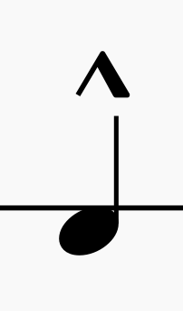

Marcato
Used for when you play a shot (X Head).
Accents make certain notes louder or more important.
Used for when you play a shot (X Head).
Used to make a regular not just a bit louder.
louder than a regular note but quieter than an accent.
In this example, the first note is accented with a regular accent, meaning it should be played louder than the non-accented notes. The second note has a regular accent, so it should be played louder than normal. The third note has a tenuto accent, indicating it should be held slightly quieter than a regular accent for emphasis.